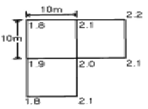
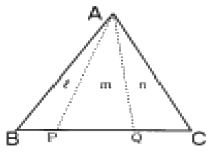
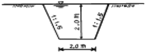
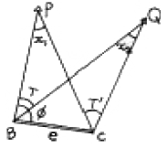
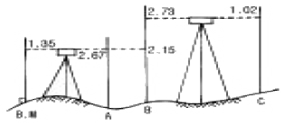
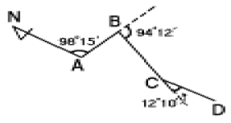
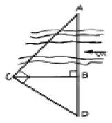
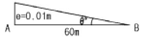
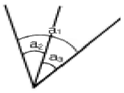

측량및지형공간정보산업기사 (2005-03-06 기출문제)
1과목: 응용측량
1. 갱내외의 연결측량에 대한 설명으로 틀린 것은?
- 지상과 지하가 어떻게 연결되어 있는가에 따라서 측량 방법이 다르다.
- 경사가 급한 경우에는 보조망원경이 있는 트랜싯을 사용해야 한다.
- 1개의 수직갱으로 연결할 경우에는 수직갱에 2개의 추를 매달아 연직면을 정한다.
- 추를 드리울 때 깊은 수갱에는 철선, 황동선 등이 사용되며 추의 중량은 5㎏ 이하이다.
(정답률: 알수없음)

2. 원곡선 설치를 위한 기본 공식 중 맞는 것은? (단, R : 곡선 반지름, I : 교각[°]) (문제 오류로 문제 및 보기 내용이 정확하지 않습니다. 정확한 내용을 아시는 분께서는 오류신고를 통하여 내용 작성 부탁드립니다. 정답은 3번입니다.)
- 접선장(T.L.) = R · tan(I/3)
- 중앙종거(M) = R(1-(I/2))
- 곡선장(C.L.) = (Å/180°)RI
- 외할(E) = R((I/2)-1)
(정답률: 알수없음)
3. 교각이 90°인 두 직선 사이에 외할(E)을 40m로 하는 곡선을 설치하고자 할 때, 적당한 곡선 반지름(R)은?
- 96.57m
- 92.43m
- 89.95m
- 87.54m
(정답률: 알수없음)
4. 경사 30°인 사갱의 갱구와 갱저 간의 고저차를 엄밀하고 용이하게 측정하는데 가장 적당한 방법은?
- 경사계에 의해서 경사를 구하고 사거리를 측정하여 계산으로 구한다.
- 수은 기압계에 의하여 측정한다.
- Y 레벨로 직접 수준측량을 한다.
- 트랜싯으로 경사를 구하고 사거리를 측정하여 계산으로 구한다.
(정답률: 알수없음)
5. 지하시설물 측량에 관한 다음 설명 중 잘못된 것은?
- 지하시설물이란 상·하수도, 가스, 통신 등 지하에 매설된 시설물을 의미한다.
- 지하시설물에 대한 탐사간격은 20m 이하로 한다.
- 지하시설물의 위치, 깊이, 서로 떨어진 거리등을 측량 한다.
- 지표면상에 노출된 지하시설물은 측량하지 않는다.
(정답률: 알수없음)
6. 어느 도면상에서 면적을 측정하였더니 400m2 이었다. 도면이 가로, 세로 1%씩 축소되었다면 이때 발생되는 면적오차는 얼마인가?
- 4m2
- 6m2
- 8m2
- 12m2
(정답률: 알수없음)
7. 택지를 조성하기 위해 수준측량을 하여 각 점의 지반고를 그림에서와 같이 얻었을 때 성토량과 절토량이 같게 되는 계획고는? (단, 토량변화는 무시)

- 1.6m
- 1.8m
- 2.0m
- 2.2m
(정답률: 알수없음)
8. 도로에서 일반적으로 널리 쓰이고 있는 종단 곡선의 형상으로 옳은 것은?
- 2차 포물선
- 클로소이드 곡선
- 반향곡선
- 렘니스케이트
(정답률: 알수없음)
9. 하천측량에서 관측한 수위에 대한 설명 중 틀린 것은?
- 최고 수위(H.W.L) : 어떤 기간에 있어서 최고의 수위로 연(年)단위나 월(月)단위 등으로 구분한다.
- 평균 최고 수위(N.H.W.L) : 어떤 기간에 있어서 연(年) 또는 월(月)의 최고 수위의 평균이다.
- 평균 고수위(M.H.W.L) : 어떤 기간에 있어서의 평균 수위 이상의 수위의 평균이다.
- 평균 수위(M.W.L) : 어떤 기간에 있어서의 수위 중 이 것보다 높은 수위와 낮은 수위의 관측회수가 똑같은 수위
(정답률: 알수없음)
10. 경관을 일반적으로 경관구성 요소에 의하여 시점계, 대상계, 경관장계, 상호계로 구분할 때 경관장계에 대한 설명으로 옳은 것은?
- 인식의 주체
- 인식대상이 되는 사물
- 대상을 둘러싸고 있는 환경
- 각 구성요인과 성격 사이에 존재하는 관계
(정답률: 알수없음)
11. 그림과 같은 삼각형에서 정점을 통과하는 직선으로 면적을 분할하고자 한다. PQ의 거리는 얼마인가? (단, ABC의 면적은 800m2, 면적 분할비 ℓ : m : n = 1 : 3 : 2, BC의 거리는 40m)

- 6.0m
- 10.0m
- 20.0m
- 30.0m
(정답률: 알수없음)
12. 다음 중 단곡선의 설치방법이 아닌 것은?
- 편각법
- 중앙종거법
- 지거법
- 극각현장법
(정답률: 알수없음)
13. 하천측량에 이용되는 삼각망으로 가장 적합한 것은?
- 삼변측량망
- 유심삼각망
- 단열삼각망
- 단삼각망
(정답률: 알수없음)
14. 직선 터널 양쪽의 좌표가 A(120,60), B(240,70)이고 각각의 높이가 80m, 82m 일 때 이 터널의 경사거리는? (단, 단위는 m임)
- 115.12m
- 120.43m
- 125.44m
- 130.43m
(정답률: 알수없음)
15. 클로소이드 곡선의 기본식으로 알맞은 것은? (단, R : 클로소이드 곡선의 반지름, L : 곡선의 길이, A : 클로소이드 매개 변수)
- R = L = A
- R / A = L
- R·A = L2
- R·L = A2
(정답률: 알수없음)
16. 곡선의 반지름이 600m, 교각이 60°인 원곡선을 설치할 때 현길이 20m에 대한 편각은?
- 1° 07′ 30″
- 1° 07′ 18″
- 57′ 30″
- 57′ 18″
(정답률: 알수없음)
17. 지중레이다(Ground Penetration Radar:GPR)탐사기법은 전자파의 어떤 성질을 이용하는가?
- 방사
- 반사
- 흡수
- 산란
(정답률: 알수없음)
18. 하천의 수위관측소 설치에 대한 설명 중 틀린 것은?
- 하안과 하상이 양호하고 세굴 및 퇴적이 없는 곳
- 지천에 의한 수위 변화가 생기지 않는 곳
- 교각등의 구조물에 의하여 수위에 영향을 받지 않는 곳
- 상·하부가 곡선으로 이어져 유속이 감소되는 곳
(정답률: 알수없음)
19. 그림과 같은 하천단면에 평균유속 2.0m/sec로 물이 흐를 때 유량(m3/sec)은?

- 10m3/sec
- 20m3/sec
- 30m3/sec
- 40m3/sec
(정답률: 알수없음)
20. 1/500 축척의 지도로 잘못 알고 계산한 토지의 면적이 6,000m2 이었다. 만약 이 지도가 1/600 축척으로 작성된 지도라면 이 토지의 실제 면적은 얼마인가?
- 8,640m2
- 8,000m2
- 7,200m2
- 5,000m2
(정답률: 알수없음)
2과목: 사진측량 및 원격탐사
21. 지리정보체계에서 표면분석과 중첩분석의 차이점은?
- 자료분석의 범위
- 자료에 사용되는 자료층 개수
- 자료분석의 지형형태
- 자료에 사용되는 입력방식
(정답률: 알수없음)
22. 비행고도 2,500m로 촬영한 항공사진에서 인접 중복사진의 주점 기선 길이가 72㎜일 때 시차차 1㎜인 건물의 높이는?
- 26m
- 35m
- 48m
- 54m
(정답률: 알수없음)
23. 입체도화기의 기계의 정도를 나타내는 C 계수에 관한 설명이 옳은 것은?
- 사진축척분모와 비례
- 초점거리와 반비례
- 최소등고선간격과 비례
- 촬영고도와 반비례
(정답률: 알수없음)
24. 한쌍의 항공사진을 좌우로 떼어 놓고 입체시 하는 경우 지면의 기복은 어떻게 보이는가?
- 실제보다 높이 차가 커 보인다.
- 실제보다 높이 차가 작아 보인다.
- 실제와 같다.
- 고저를 분별하기 힘들다.
(정답률: 알수없음)
25. 기하학적 지리좌표정보를 담을 수 있는 영상자료의 저장 방식은?
- pcx
- geotiff
- jpg
- bmp
(정답률: 알수없음)
26. 항공사진용 사진기의 보통각 렌즈의 피사각의 일반적인 크기는?
- 90°
- 80°
- 60°
- 50°
(정답률: 알수없음)
27. 절대표정(absolute orientation : 대지표정)에 필요한 최소 기준점 수로 옳은 것은?
- 2점의 (x, y, z)좌표 및 1점의 (z)좌표
- 2점의 (x, y)좌표 및 2점의 (z)좌표
- 1점의 (x, y)좌표 및 3점의 (z)좌표
- 1점의 (x, y, z)좌표 및 2점의 (z)좌표
(정답률: 알수없음)
28. 사진크기가 23cm×23cm일 때 평탄한 토지를 촬영하였다. 이때 촬영고도가 2460m이고 이 사진 한 장에 촬영된 토지의 전체 포괄면적이 13.68km2일 때, 사진기의 초점거리는? (단, 사진은 엄밀수직사진이다.)
- 123mm
- 133mm
- 143mm
- 153mm
(정답률: 알수없음)
29. 메타데이터(Metadata)에 대한 설명 중 거리가 먼 것은?
- 일련의 자료에 대한 정보로서 자료를 사용하는데 필요하다.
- 자료를 생산, 유지, 관리하는데 필요한 정보를 담고 있다.
- 자료에 대한 내용, 품질, 사용조건 등을 기술한다.
- 정확한 정보를 유지하기 위해 수정 및 갱신이 불가능하다.
(정답률: 알수없음)
30. 다음 중 수치지형모형(DTM)으로부터 추출할 수 있는 정보라고 볼 수 없는 것은?
- 경사분석도
- 가시권 분석도
- 사면방향도
- 토지이용도
(정답률: 알수없음)
31. 동일한 경계를 갖는 두개의 다각형을 경계 중첩하였을 때 입력 오차 등에 의하여 완전 중첩되지 않고, 불필요한 다각형이 발생하는 경우가 있다. 이러한 불필요한 다각형을 무엇이라 하는가?
- margin
- gap
- sliver
- over-shoot
(정답률: 알수없음)
32. GIS의 자료수집방법으로서 래스터 데이터(격자데이터)를 얻기 위한 방법과 거리가 먼 것은?
- GPS 위성측량
- 항공사진으로부터 수치정사사진의 작성
- 다중밴드 위성영상으로부터 토지피복 분류
- 위성영상의 기하보정 및 좌표 등록
(정답률: 알수없음)
33. 지상고도 3000m의 비행기에서 초점거리 150mm의 사진기로 촬영한 엄밀수직사진 위에서 길이 50m인 철근콘크리트교의 길이는?
- 0.25mm
- 2.50mm
- 25.00mm
- 250.00mm
(정답률: 알수없음)
34. 어떤 지역을 축척 1/30,000로 초점거리 15cm, 화면의 크기 23cm×23cm, 중중복도 60％, 횡중복도 30％인 항공사진을 촬영하였다. 이 항공 사진의 기선고도비는 얼마인가?
- 1.63
- 0.82
- 0.61
- 0.16
(정답률: 알수없음)
35. 인공위성에 의한 원격탐측(Remote Sensing)의 장점이 아닌것은?
- 관측자료가 수치적으로 취득되므로 판독이 자동적이며 정량화가 가능하다.
- 관측 시각이 좁으므로 정사투영상에 가까워 탐사자료의 이용이 쉽다.
- 자료수집의 광역성 및 광역 동시성, 수량적인 정확도가 크다.
- 회전주기가 일정하므로 언제든지 원하는 지점 및 시기에 관측하기 쉽다.
(정답률: 알수없음)
36. 사진측량의 장점으로 옳은 것은?
- 정확도가 균일하다.
- 시설비용이 적게 든다.
- 소규모 측량에 경제적이다.
- 각 작업공정을 동시에 시작할 수 있다.
(정답률: 알수없음)
37. 다음 중 래스터형 자료의 장점으로 옳지 않은 것은?
- 자료구조가 간단하다.
- 다양한 공간분석이 편리하다.
- 중첩 및 원격탐사자료와의 연결이 용이하다.
- 지도를 확대하여도 형상이 변하지 않는다.
(정답률: 알수없음)
38. 수치영상자료는 대개 8 비트로 표현된다. pixel 값의 그레이레벨 범위로 옳은 것은?
- 0~63
- 1~64
- 0~255
- 1~256
(정답률: 알수없음)
39. 축척 1/10000로 평탄한 토지를 촬영한 연직사진이 있다. 이 사진의 화면크기가 18cm×18cm, 종중복도가 60%라면 촬영기선장은?
- 520m
- 720m
- 920m
- 1120m
(정답률: 알수없음)
40. 적외선 영상, 위성 영상, 레이더 영상, 천연색 영상 등을 이용하여 대상체와 직접적인 물리적 접촉없이 정보를 획득 하는 기술이며 과학을 일컷는 영상 측량방법은?
- 항공사진측량(Aerial Photogrammetry)
- 지상사진측량(Terrestrial Photogrammetry)
- 원격 탐사(Remote Sensing)
- 근접사진측량
(정답률: 알수없음)
3과목: GIS 및 GPS
41. 다음 중 격자형 자료(래스터 자료)의 압축방법이 아닌것은?
- 사슬부호(chain code)
- 연속분할부호(run-length code)
- 블록부호(block code)
- 포인트부호(point code)
(정답률: 알수없음)
42. 다음 그림의 측점C에서 점Q 및 점P 방향에 장애물이 있어서 시준이 불가능하여 편심거리 e만큼 떨어진 (B)점에서 각 T를 관측했다. 측점C에서의 측각 T′은?

- T′= T + x1
- T′= T - x1
- T′= T - x1 - x2
- T′= T + x1 - x2
(정답률: 알수없음)
43. 다음 중 GIS자료를 출력하기 위한 방법이 아닌 것은?
- 모니터
- 프린터
- 자기매체
- 디지타이저
(정답률: 알수없음)
44. 그림에서 B.M의 지반고가 89.81m라면 C점의 지반고는?

- 85.27m
- 90.72m
- 95.94m
- 88.39m
(정답률: 알수없음)
45. 교호수준측량을 하는 목적을 설명한 것으로 가장 적합한 것은?
- 수준측량의 노선 중 강, 호수, 하천 등이 있어 중간에 레벨을 세울 수 없을 때
- 철도, 도로, 수로와 같은 노선측량에서 노선 중심선의 표고를 관측할 때
- 수로, 하천 등의 토량계산을 할 때
- 수준측량의 노선 가운데에 장애물이 있어 시통이 불가능 할 때
(정답률: 알수없음)
46. 삼각점의 선점에 대한 설명으로 틀린 것은?
- 삼각점의 배치는 될 수 있는대로 등밀도로 한다.
- 형성된 삼각형은 되도록 정삼각형에 가까운 형태로 한다.
- 삼각점은 언제든지 이동할 수 있도록 간편한 형태로 설치하여야 한다.
- 삼각점은 많은 벌목이나 고측표가 필요한 곳은 피하는 것이 좋다.
(정답률: 알수없음)
47. 다음 그림에서 CD측선의 방위각과 방위는 얼마인가?

- 방위각 180° 17', 방위 S17' W
- 방위각 180° 17', 방위 S17' E
- 방위각 204° 37', 방위 S24° 37' W
- 방위각 204° 37', 방위 S24° 37' E
(정답률: 알수없음)
48. 다음 하천의 폭 AB의 거리는? (단, BC = 40m, BD = 20m, ∠ACD=∠ABC = 90°임)

- 60m
- 80m
- 100m
- 120m
(정답률: 알수없음)
49. 다음 중 물리학적 측지학의 대상 범위와 거리가 먼 것은?
- 입체 지도 제작
- 중력 측정
- 지구자기 측정
- 탄성파 측정
(정답률: 알수없음)
50. 우리나라의 축척 1/50,000인 지형도에 표시되어 있는 주곡선의 간격은?
- 10m
- 20m
- 30m
- 50m
(정답률: 알수없음)
51. GPS측량의 체계구성을 크게 3가지로 나눌 때 해당되지않는 것은?
- 사용자부분
- 우주부분
- 제어부분
- 신호부분
(정답률: 알수없음)
52. 축척 1/25,000인 지형도에서 산정의 표고 449m, 산록의 표고 12m일 때 산정과 산록 사이의 도상거리는 48mm였다. 이 산의 경사각은? (단, 이 산의 경사는 등경사로 한다.)
- 약 15°
- 약 20°
- 약 25°
- 약 32°
(정답률: 알수없음)
53. 지구의 적도반지름이 6370km이고 편평률이 1/299라고 하면 적도반지름과 극반지름의 차이는 얼마인가?
- 21.3㎞
- 31.0㎞
- 40.0㎞
- 42.6㎞
(정답률: 알수없음)
54. 트랜싯을 측점 A에 설치하여 거리 60m인 전방의 B점을 시준하였을 때 AB측선에 대하여 직각방향으로 1cm가 떨어져 있다. 이것에 의한 방향의 오차(θ″)는?

- 28.4″
- 30.4″
- 32.4″
- 34.4″
(정답률: 알수없음)
55. 그림에서 a1, a2, a3 를 같은 경중률로 관측한 결과 다음과 같을 때 각각(各角)에 조정하여야 할 값으로 맞는 것은? (단, a1 - a2 - a3 = 24")

- a1 = +8", a2 = +8", a3 = +8"
- a1 = -8", a2 = +8", a3 = +8"
- a1 = -8", a2 = -8", a3 = -8"
- a1 = -12", a2 = +12", a3 = +12"
(정답률: 알수없음)
56. 30m 표준자보다 3cm가 짧은 자를 사용하여 측정한 값이 300m일 때 실제 거리는?
- 303.0m
- 300.3m
- 297.0m
- 299.7m
(정답률: 알수없음)
57. 다음 중에서 지자기의 전자장을 결정하는 3요소가 아닌것은?
- 편각
- 앙각
- 복각
- 수평분력
(정답률: 알수없음)
58. 벡터구조를 격자구조와 비교할 때 벡터구조가 갖는 장단점에 대한 설명으로 틀린 것은?
- 그래픽의 정확도가 높다.
- 위치와 속성의 검색, 갱신, 일반화가 가능하다.
- 자료구조가 단순하다.
- 현상적 자료구조를 잘 표현할 수 있고 축약되어 있다.
(정답률: 알수없음)
59. 거리측정시 생기는 오차 중 정오차가 아닌 것은?
- 장력의 변화로 인하여 생기는 오차
- 표준길이와 줄자의 눈금이 틀려서 발생하는 오차
- 줄자의 처짐으로 인하여 생기는 오차
- 눈금의 오독으로 인하여 생기는 오차
(정답률: 알수없음)
60. 50m 줄자로 250m를 측정한 경우 줄자에 의한 측거오차를 50m 마다 ±1cm 로 가정하면 전체길이의 거리측량에서 발생하는 오차는 얼마인가?
- ±2.2cm
- ±3.8cm
- ±4.8cm
- ±5.2cm
(정답률: 알수없음)
4과목: 측량학
61. 1/50,000지형도에서 수애선(水涯線)의 설명중 옳지 않은 것은?
- 하천에 있어서는 평상시의 수위
- 바다에 있어서는 만조시의 정사영(正射影)
- 호수에 있어서는 평상시의 수위
- 폭포에 있어서는 수면과 육지의 경계선
(정답률: 알수없음)
62. 시·군·구의 지방지명위원회의 구성으로 옳은 것은?
- 위원장 및 부위원장 각1인을 포함한 5인 이내의 위원
- 위원장 및 부위원장 각1인을 포함한 10인 이내의 위원
- 위원장 및 부위원장을 제외한 7인 이내의 위원
- 위원장 및 부위원장 각1인을 포함한 7인 이내의 위원
(정답률: 알수없음)
63. 기본측량의 실시 공고는 누가 하는가?
- 건설교통부장관
- 도지사
- 국토지리정보원장
- 측량계획기관
(정답률: 알수없음)
64. 다음 설명 중 옳은 것은?
- 공공측량은 기본측량의 측량성과만을 기초로 하여 실시하여야 한다.
- 도지사는 공공측량 계획기관에 대해서 공공측량에 관한 장기계획서의 제출을 요구할 수 있다.
- 일반측량은 기본측량 또는 공공측량의 성과 및 측량 기록을 기초로 하여 실시하는 것을 원칙으로 한다.
- 공공측량 성과 및 측량기록의 사본은 일반인이 열람할 수 없다.
(정답률: 알수없음)
65. 측량업의 등록을 한 자는 등록사항중 변경사항이 있을 경우 변경등록을 하여야 한다. 변경등록을 하여야 할 사항이 아닌 것은?
- 영업소 및 작업실의 면적
- 상호
- 주된 영업소의 소재지
- 기술능력 및 장비
(정답률: 알수없음)
66. 측량표를 국토지리정보원장의 승인없이 이전하거나 손괴한 자의 벌칙은?
- 2년 이하의 징역 또는 2000만원 이하의 벌금
- 1년 이하의 징역 또는 1000만원 이하의 벌금
- 200만원 이하의 과태료
- 3년 이하의 징역 또는 3000만원 이하의 벌금
(정답률: 알수없음)
67. 다음 중 지도도식규칙에 위배되는 것은?
- 등고선은 주곡선,간곡선,조곡선 및 계곡선으로 구분하여 표시한다.
- 지도의 도곽은 외도곽과 내도곽으로 구분한다.
- 주기에 사용되는 한자는 자획이 복잡하더라도 약자로 사용하여서는 안된다.
- 지물의 실제 형상 또는 상징물의 표현은 선 또는 기호로 한다.
(정답률: 알수없음)
68. 다음 중 일시표지에 해당하는 것은?
- 자기점 표석
- 검조의
- 측표
- 표기
(정답률: 알수없음)
69. 기본측량용역의 경우 측량기술자의 측량용역현장에의 배치 기준으로 옳은 것은?
- 고급기술자 2인 이상
- 중급기술자 2인 이상
- 고급기술자 1인 이상
- 중급기술자 1인 이상
(정답률: 알수없음)
70. 건설교통부장관은 규정에 의하여 과태료를 부과하고자 하는 경우에는 최소 몇 일 이상의 기간을 정하여 과태료처분 대상자에게 구술 또는 서면에 의한 의견진술의 기회를 주어야 하는가?
- 7일
- 10일
- 14일
- 30일
(정답률: 알수없음)
71. 수치 주제도의 보완은 몇 년 주기로 하는가?
- 1년
- 2년
- 3년
- 4년
(정답률: 알수없음)
72. 측량협회의 설립목적으로 틀린 것은?
- 측량기술자 및 측량업자의 품위보전
- 측량업의 관리
- 측량에 관한 기술의 향상에 기여
- 측량제도의 건전한 발전에 기여
(정답률: 알수없음)
73. 지형·지물의 변동에 관한 보고는 건설교통부령이 정하는 바에 따라 매년 언제까지 하여야 하는가?
- 1월말
- 2월말
- 3월말
- 4월말
(정답률: 알수없음)
74. 측량법에 정의된 측량업의 종류에 속하지 않는 것은?
- 측지측량업
- 공공측량업
- 기본측량업
- 지도제작업
(정답률: 알수없음)
75. 측량업의 등록을 한자가 등록사항중 기술능력 및 장비를 변경한 때에는 그 변경이 있은 날로부터 최대 며칠이내에 변경등록을 하여야 하는가?
- 7일
- 15일
- 30일
- 60일
(정답률: 알수없음)
76. 1등 삼각점표석의 표주 상면의 한변 길이는?
- 10 cm
- 15 cm
- 18 cm
- 20 cm
(정답률: 알수없음)
77. 다음의 측량표 중 설치자의 이름을 명시할 필요가 없는 것은?
- 도근점표석
- 측표
- 방위표석
- 표기
(정답률: 알수없음)
78. 측량업 등록의 결격 사유에 해당되는 것은?
- 한정치산의 선고를 받은 자
- 형의 선고를 받고 그 집행이 종료되고 3년이 경과한자
- 측량업의 등록을 취소 당한 날로 부터 2년이 경과한자
- 파산선고를 받고 복권된 자
(정답률: 알수없음)
79. 기본측량을 위하여 설치한 측량표의 관리자는?
- 건설교통부장관
- 국토지리정보원장
- 서울특별시장, 광역시장 또는 도지사
- 구청장, 시장 또는 군수
(정답률: 알수없음)
80. 다음 용어의 정의중 맞는 것은?
- "측량"이라 함은 토지 및 연안해역의 측량을 말하며, 지도 및 연안해역 기본도의 제작 및 측량용 사진촬영 은 제외한다.
- "측량계획기관"이라 함은 기본측량에 관한 계획만을 수립하는 자를 말한다.
- "기본측량"이라 함은 모든 측량의 기초가 되는 것으로서 건설교통부장관의 명을 받아 국토지리정보원장이 실시하는 것을 말한다.
- "측량성과"라 함은 당해 측량에서 얻은 각종 기록과 최종 성과를 말한다.
(정답률: 알수없음)